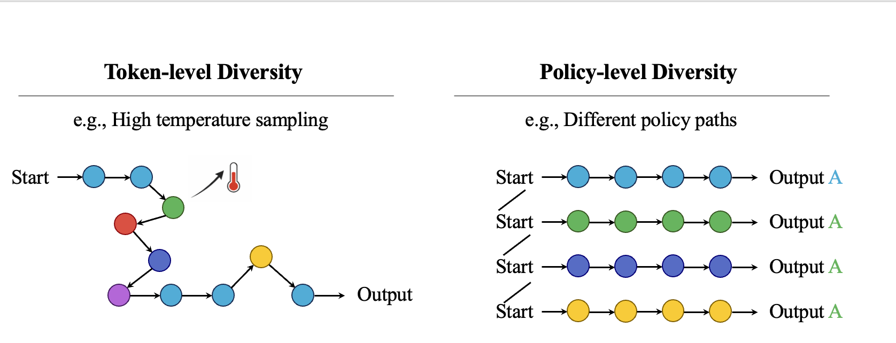
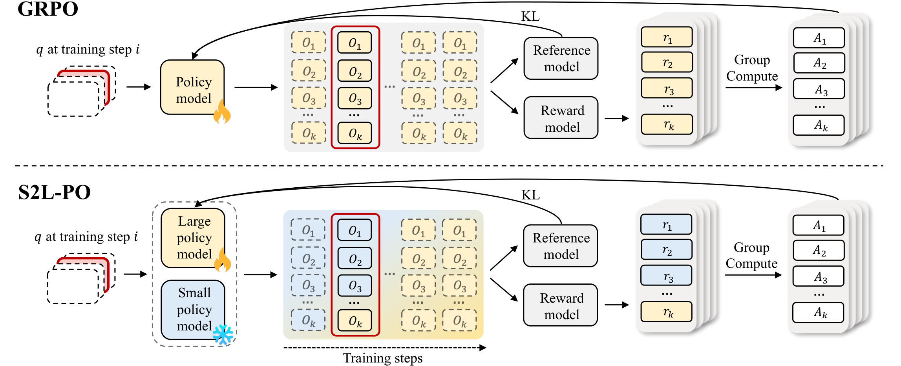
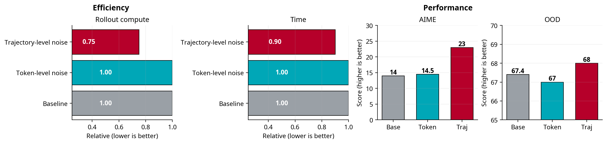
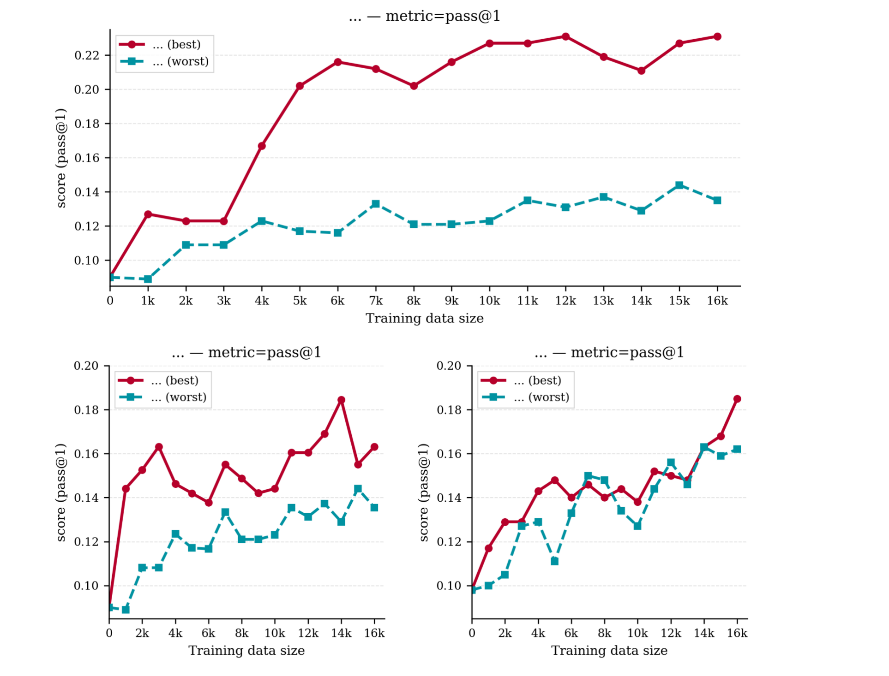
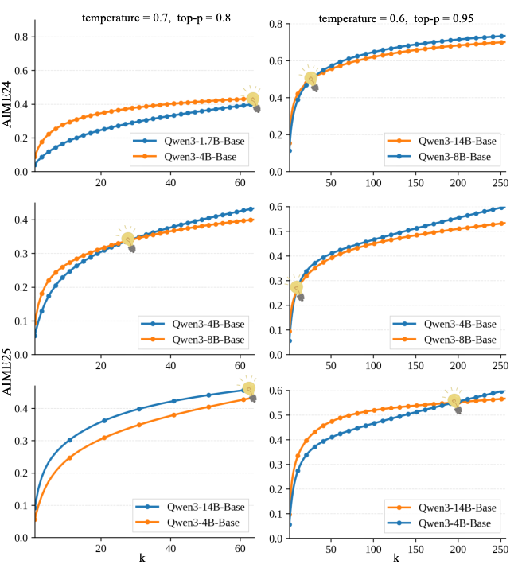

Accepted · ICML 2026
Reinforcement Learning
LLM Reasoning
GRPO
Smaller models are natural explorers
for policy-level diversity in GRPO.
S2L-PO rethinks how diversity should enter GRPO rollouts. Instead of injecting more token-level noise — which compounds over long reasoning chains — we use a frozen smaller model as a structured, temporally coherent explorer, then progressively anneal back to on-policy. The result: +8.8% on AIME 24 with fewer FLOPs.
Authors
Yiming Ren*, Yiran Xu*, Zicheng Lin*, Chufan Shi, Yukang Chen, Dingdong Wang, Tianhe Wu, Jujie Wang, Yujiu Yang, Yu Qiao†, Ruihang Chu†
TL;DR
Bigger models win at pass@1, but smaller models from the same family win at pass@k for larger k.
That gap is not noise — it's policy-level diversity induced by parameter compression. Harness it as exploration, anneal it away as the learner matures, and GRPO trains faster and ceilings higher.
+8.8 pp
AIME 24 · Qwen3-8B-Base
1.7B explorer → 8B learner
+10.4 pp
AIME 25 · Qwen3-8B-Base
22.5 vs 12.1 (vanilla GRPO)
−25%
Rollout compute
vs. token-level temperature
+3.9 pp
CommonsenseQA (OOD)
no in-domain regression
§ Insight
Two ways to diversify a rollout — one of them stays coherent.
Token-level perturbations perturb the action. Policy-level perturbations perturb the policy. Only one of them survives a long reasoning chain.
Token-level
High-temperature sampling
Adds i.i.d. randomness per decoding step. Surface diversity is high, but small deviations compound over long chains.
- Prefix-match probability decays as (1−p)t
- Long-range gradient cross-terms cancel → noisier updates
- Aggressive temperature ⇒ entropy explosion & mode incoherence
Policy-level · ours
Parameter-level compression
A distilled smaller sibling shifts the whole policy with a single, time-invariant perturbation δθ. Trajectories follow different but coherent strategies.
- Same δθ at every step ⇒ temporally correlated shifts
- Per-step score functions stay aligned → cleaner GRPO gradients
- Reuses an existing, already-distilled smaller sibling — no extra training cost

Figure · Left: token-level diversity bends a single trajectory with step-wise noise. Right: policy-level diversity yields multiple coherent, internally consistent strategies — each path remains a sensible solution.
§ Method · S2L-PO
Small-to-Large policy optimization with progressive annealing.
A drop-in modification to the GRPO rollout phase. Objective, advantage, optimizer — all unchanged.
One rollout group, two sources.
At step i, sample Gw rollouts from a frozen small explorer πω and Gs from the trainable learner πθ. Compute group-relative advantages over the combined group, then optimize the standard GRPO objective.
Linearly anneal αi = 1 − (i−1)/(Tmix−1). Early training is exploration-heavy; the second half is fully on-policy.
backbone Qwen3-Base
explorer 1.7B / 4B
learner 8B / 14B
trainer verl · GRPO
data DAPO-17k
# Algorithm 1 — S2L-PO rollout (G = group size, T = total steps)
for i in 1..T:
if i ≤ T_mix:
α ← 1 − (i−1)/(T_mix−1)
G_w ← ⌈α·G⌉ # small explorer
G_s ← G − G_w # large learner
else:
G_w, G_s ← 0, G # on-policy GRPO
O ← sample(π_ω, G_w) ∪ sample(π_θ, G_s)
A ← group_relative_advantage(O, r_φ)
θ ← argmax_θ J_GRPO(θ; O, A)

Top: standard GRPO rolls out from a single policy. Bottom: S2L-PO mixes a frozen small explorer with the learner, anneals their ratio over training, and recovers on-policy GRPO by the end.
§ Results
Faster convergence, higher ceiling, lower compute.
Numbers below are Pass@1 (%), 16 rollouts per problem, nothink-mode evaluation.
▸ Mathematical Reasoning (Pass@1, %)
| Method · Qwen3-8B-Base learner | AIME 24 | AIME 25 |
|---|
| GRPO (baseline) | 15.0 | 12.1 |
| S2L-PO · 4B explorer | 19.1 | 13.3 |
| S2L-PO · 1.7B explorer | 23.8 +8.8 | 22.5 +10.4 |
| Method · Qwen3-14B-Base learner | | |
|---|
| GRPO (baseline) | 18.0 | 12.9 |
| S2L-PO · 4B explorer | 24.4 +6.4 | 14.6 +1.7 |
▸ Out-of-Domain (CommonsenseQA, Acc %)
| Method | Qwen3-8B | Qwen3-14B |
|---|
| GRPO | 63.9 | 67.2 |
| S2L-PO · 1.7B explorer | 64.2 | — |
| S2L-PO · 4B explorer | 67.8 +3.9 | 70.7 +3.5 |
Generalization preserved. Math-only RL with S2L-PO actually improves downstream commonsense — the exploration signal isn't overfitting to AIME-style problems.

Headline · Left: trajectory-level (policy-level) noise uses 25% less rollout compute and 10% less wall-clock vs. token-level. Right: it lifts AIME from 14 → 23 and CommonsenseQA from 67.4 → 68.

Pass@1 vs. training data — S2L-PO climbs faster and stabilizes at a strictly higher ceiling than vanilla GRPO.

The motivating phenomenon — smaller Qwen3 base models catch up and surpass larger siblings as the sample budget k grows.
If you find this work useful, please cite us!
@inproceedings{s2lpo2026,
title = {Smaller Models are Natural Explorers for Policy-Level Diversity in GRPO},
author = {Yiming Ren and Yiran Xu and Zicheng Lin and Chufan Shi and Yukang Chen and Dingdong Wang and Tianhe Wu and Jujie Wang and Yujiu Yang and Yu Qiao and Ruihang Chu},
booktitle = {Proceedings of the 43rd International Conference on Machine Learning (ICML)},
year = {2026},
}